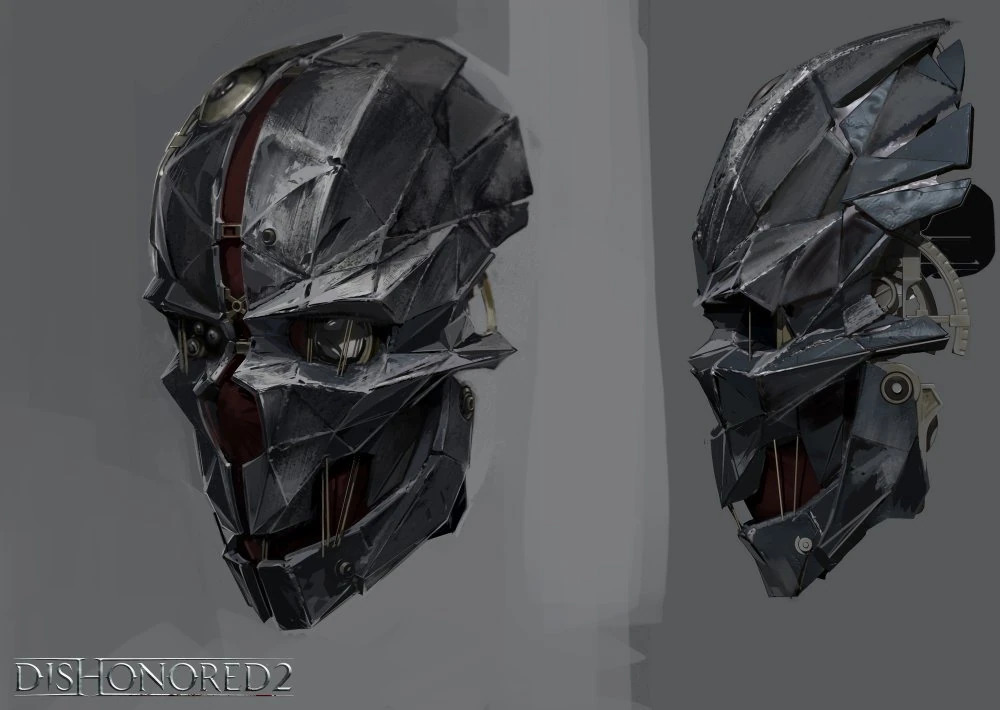
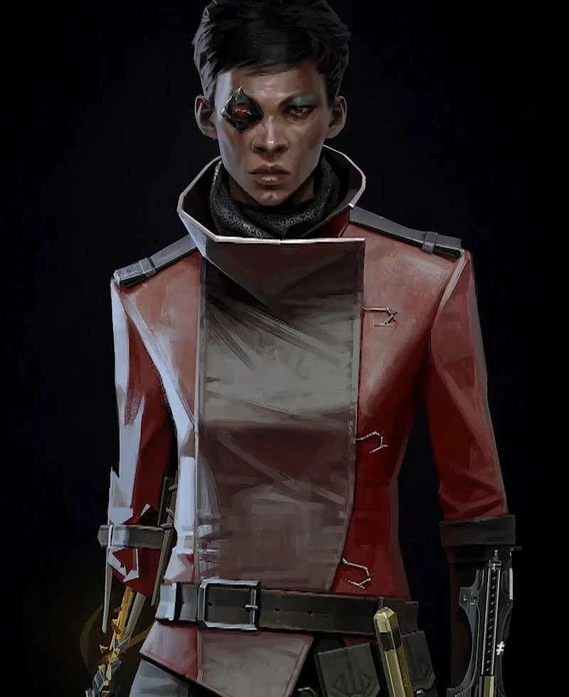
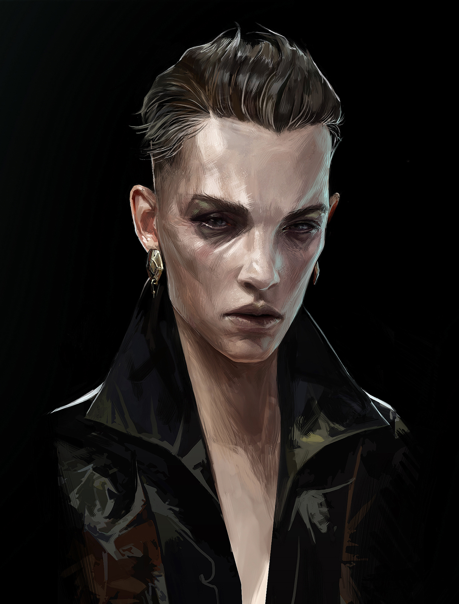
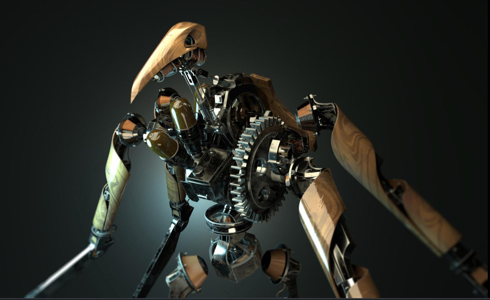
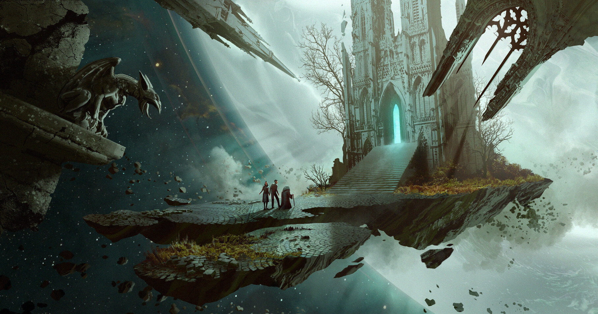

Visions de l'Empire
Dix images de l'Empire des Îles. Côté personnages, on croise Emily Kaldwin, le regard dur, Billie Lurk dans son manteau rouge, la sorcière Delilah et l'Outsider en veste noire, debout dans l'obscurité. Côté décors, la tour de Dunwall et ses jardins sous un ciel bleu, puis les façades blanches des docks de Karnaca au pied de la montagne. On retrouve aussi le masque de Corvo, vu de face et de profil, un soldat mécanique de Jindosh tout en engrenages, le Cœur, fait de chair et de métal, et les rochers qui flottent dans la brume du Grand Vide. Survolez une image pour la mettre en avant.








